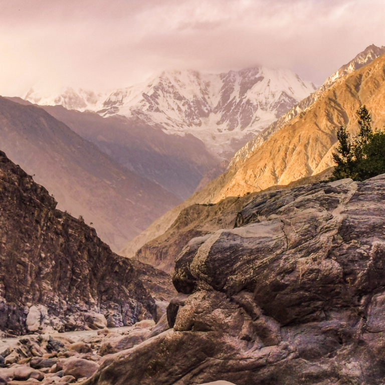
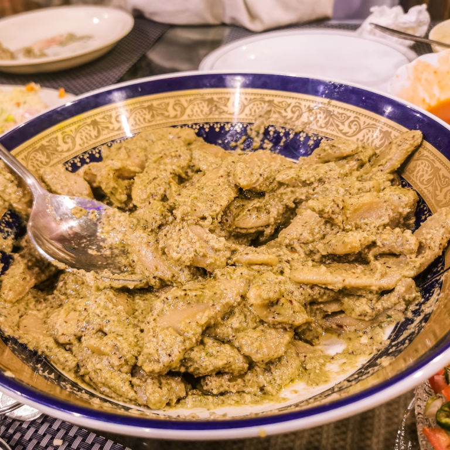

A Complete Travel Guide To Skardu Pakistan
.jpg)
If you’ve been planning to travel to the northern areas of Pakistan, you’ve likely stumbled across the name Skardu. This important city in Gilgit-Baltistan may be slightly less popular than the Hunza Valley to the north or Fairy Meadows to the west but is nonetheless one of Pakistan’s biggest tourist destinations thanks to the unique natural sites in its vicinity. If you’ve been dreaming of visiting a cold desert or an alpine plateau, Skardu is the perfect destination in Pakistan. And if you’re dying to sample some delicious Balti cuisine as well, it’s certainly time to pack your bags and plan a getaway to Skardu.
Best Time To Visit Skardu
The best time to visit Skardu is summer from June to September. It’s the optimal time to enjoy lush green landscapes at comfortable temperatures without much rainfall and escape from the suffocating heat in other parts of Pakistan. October is another great time to visit Skardu in order to experience the region in golden autumn colors. Winter turns the region around Skardu into a beautiful white wonderland but it will be more difficult to access the city during this season.
Best Places To Visit Near Skardu
The region around Skardu is full of amazing tourist destinations. Here are some suggestions of places to visit near Skardu,
Manthoka Waterfall
Manthoka Waterfall is a beautiful waterfall about an hour southeast of Skardu. Surrounded by a serene green valley, Manthoka Waterfall emerges from the mountains so tall and majestically that it’s hard to believe the waterfall is actually manmade! Shower yourself in the waterfall’s pristine water, take photos of silky streams and rainbows, and enjoy a relaxing picnic in one of the most beautiful places near Skardu.
Shangri-La Resort
The Lower Kachura Lake is located within the majestic Shangrila Resort, which is hands-down one of the most beautiful places in Pakistan, if not the world. Spend a relaxing afternoon surrounded by the greenest garden in this literal Heaven on earth and make sure to enjoy some organic apple juice in front of the heart-shaped lake. And if you feel extra fancy, consider staying a night at the resort.
Food In Skardu
Balti cuisine is perhaps the most under-appreciated cuisine in all of Pakistan. Balti flavors and seasonings are very different from what you might be used to from other parts of Pakistan, featuring a lot more carby comfort foods than spices. Because it’s so hard to find Balti food in other parts of Pakistan, you should try to eat as much as possible when you’re in Skardu.
Safety In Skardu
Generally speaking, Skardu is a very safe travel destination. However, there are a few things to keep in mind to ensure a smooth trip.